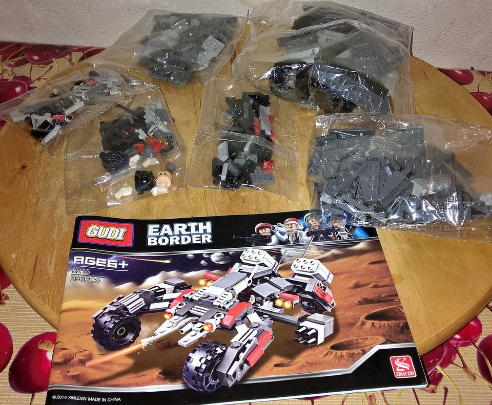
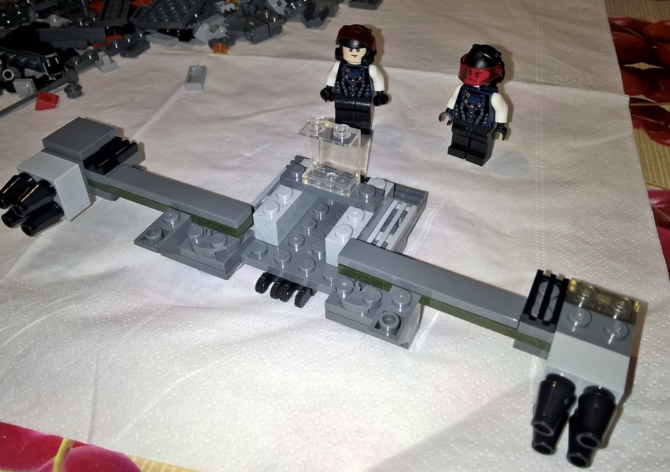
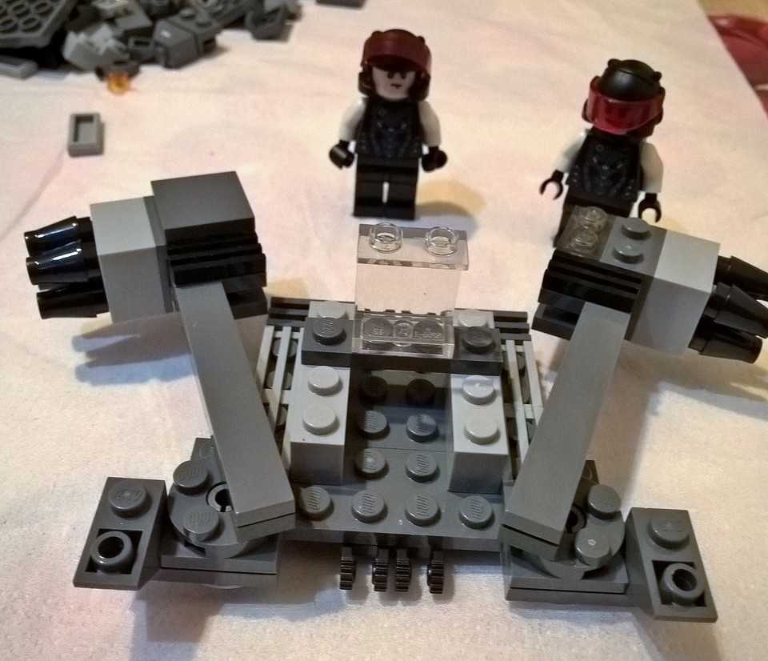
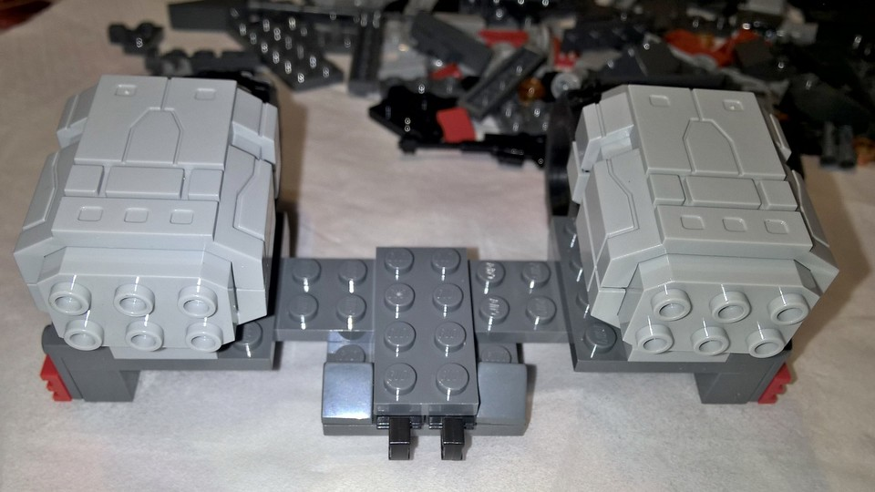
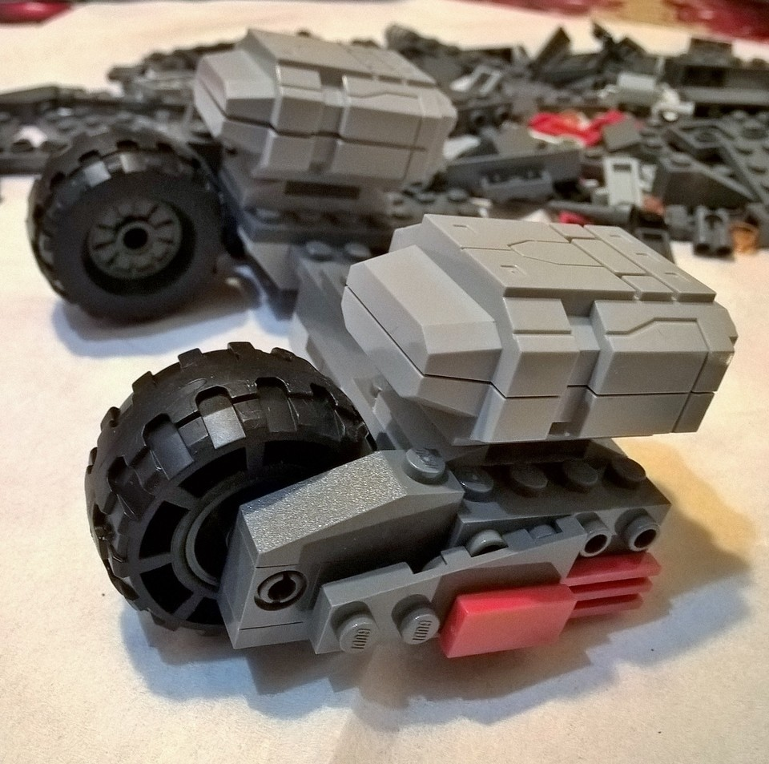
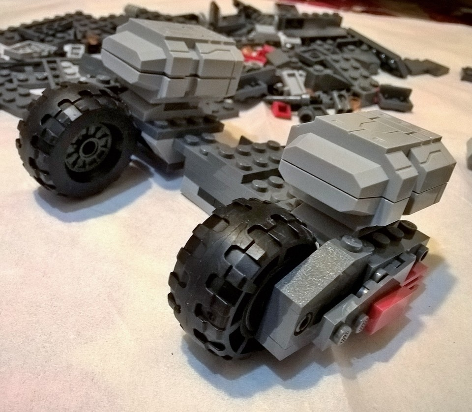
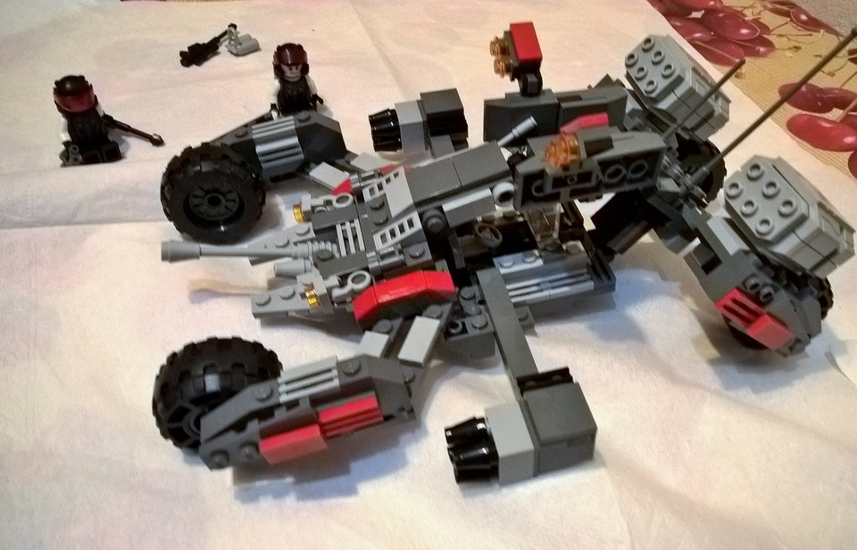
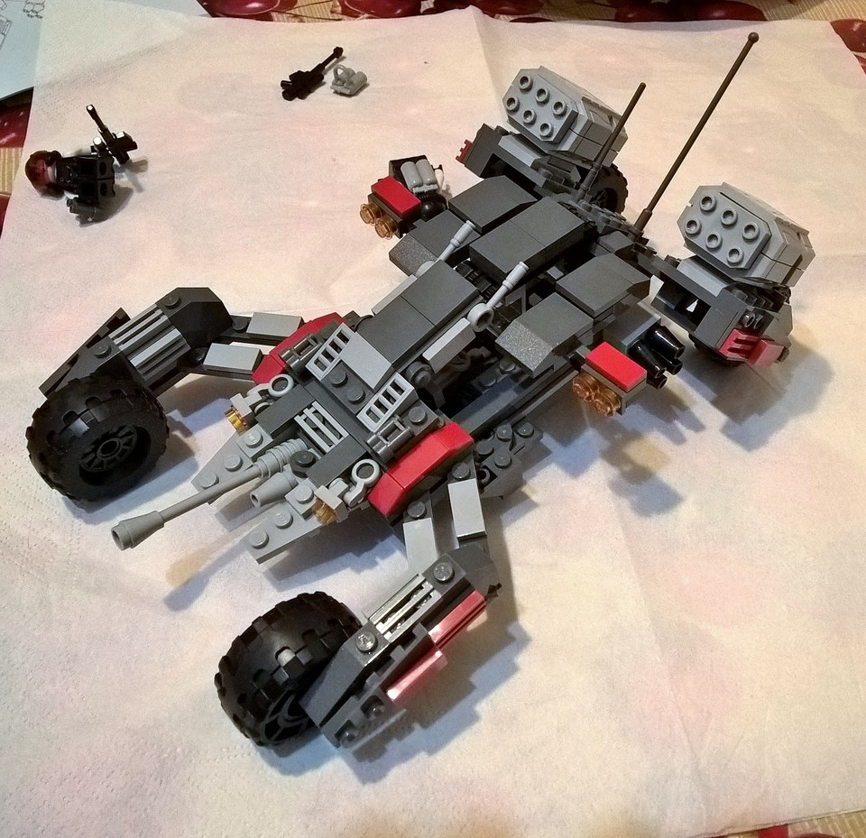
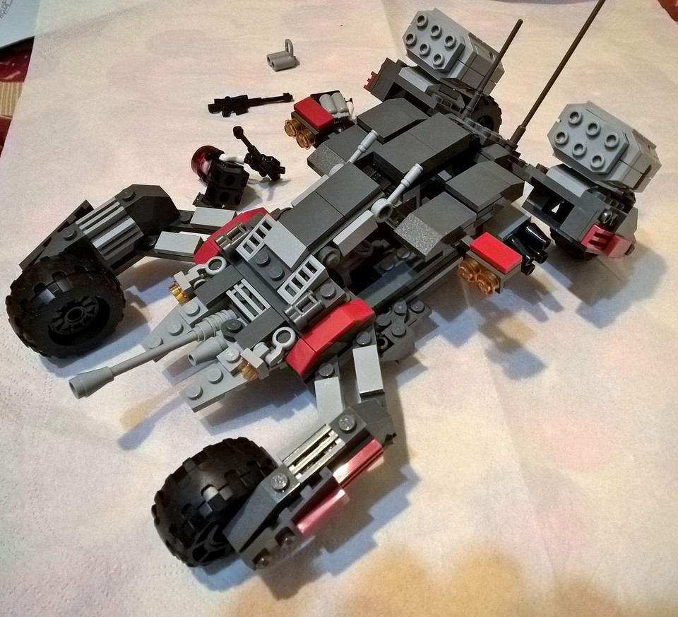
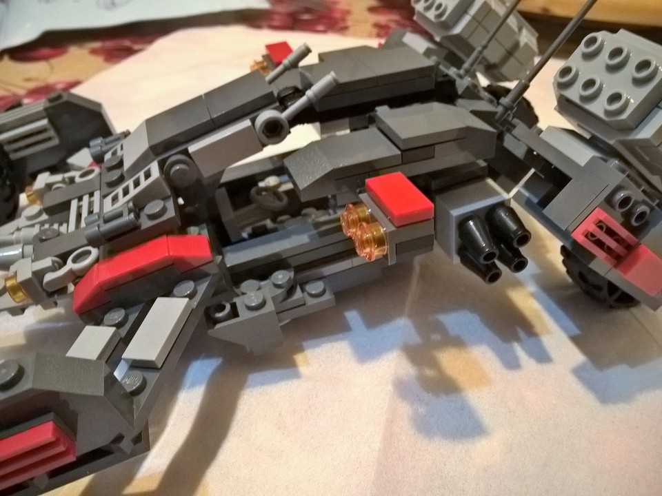

Inizio
La presentazione iniziale è la seguente, pressoché identica a quella dell'8209, ovvero: buste di plastica robusta contenenti i pezzi raggruppati grosso modo per dimensione e le istruzioni di montaggio, in carta patinata e piuttosto chiare.

Incominciamo il montaggio... e si presenta una prima sorpresa: per inserire le mani delle minifig nelle braccia occorre spingere, e non poco. Le immensely strong hands menzionate nelle vecchie versioni di Communist Lego si fanno vedere. La cosa è seccante, perché c'è sempre la paura di spaccare il braccio in qualche modo. Per fortuna, con un po' di calma e pazienza, le mani entrano. Tuttavia, quei micron in più rendono molto faticoso la rotazione in sede. Vabbé, pazienza.
Dopo lo sforzo iniziale fanno bella mostra di sé un miliziano identico a quello dell'8209 e un commilitone, distinguibile dalla faccia con l'espressione diversa. Mettiamoli quindi a supervisionare il montaggio.

Iniziamo a costruire il modello: per prima cosa due braccia lanciamissili, montate sui perni rotanti visti nell'8209. Notate la coppia di cerniere a scatto: queste ultime si riveleranno fondamentali nella costruzione del modello.

Passiamo poi alla costruzione della parte lanciagranate. Per fortuna, le ruote sono di gomma morbida, molto diverse da quelle viste in altri modelli. Tuttavia, la disposizione queste ruote presenta un problema: le gomme fanno un lieve attrito contro il supporto, quel tanto che basta da diminuire la giocabilità del modello. Per ovviare a questo problema occorre spostare di un mm le gomme di modo che non tocchino il supporto (vabbé....)



Dopo questo passo, passiamo al montaggio della parte centrale. E' la sagra delle cerniere a scatto usate in maniera creativa: la parte posteriore viene collegata alla parte centrale per mezzo di una coppia di queste che contribuiscono a formare un effetto tenaglia al limite del MOC'ing legale. In questa foto -- non mia -- si vede per bene come funziona la cosa: tettuccio e telaio sono tenuti insieme da un vetrino trasparente (sotto il "5", si vede appena) e la parte centrale e quella posteriore del modello sono collegati con due coppie di cerniere piegate. Extreme MOCcing in action.

Analogamente, il tettuccio ferma la parte davanti con un effetto tenaglia simile. Non ci sono foto di questi passi, perché ero troppo impegnato a combinare le parti.
Alla fine della fiera sono riuscito a trovare la combo proibita del montaggio dell'8215, ed ecco i risultati:




Bello, vero?
Il modello è innegabilmente bello a vedersi: ha un feeling high tech/manga che ben pochi modelli Lego riescono ad avere e, soprattutto, ha un aspetto unico: non è una banale copia Lego, né tantomeno una copia dei modelli militari della Oxford Toys.
Però... il però è che non è giocabile. Mentre l'8209 con una piccola modifica permetteva l'alloggiamento della minifig nel vano, qui non c'è spazio alcuno per il Difensore della Terra. Probabilmente è così, ovvero: il concept del modello è quello di un drone d'assalto robotizzato. Però, peccato: da fuori mi aspettavo qualcosa che unisse giocabilità e trasformabilità da robottone. D'altronde, con 296 pezzi non si può pretendere il Gundam con l'alloggiamento per Amuro Rei.
Oltre al montaggio a cerniera c'è un'altra scelta stilistica discutibile: il supporto del cannoncino anteriore è fissato con 2 piatti lisci 2x1. Ovviamente, quando si orienta il cannoncino, diventa molto facile che le alettine si stacchino.
Insomma, l'impressione è quella di un modellino da scaffale più che da battaglia. Vabbeh.
Tolte le considerazioni stilistiche, la qualità dei mattoncini è quella dell'8209: molto, molto simile a quella Lego. Incastro quasi perfetto, presa superba e... non è ze rìal stuff ma poco di manca. Qualità lievemente inferiore per le minifig -- occorre limare le braccia di qualche micron, o ungerle -- e per la scelta di montare le gomme all'interno.
Conclusioni
Rispetto all'8209 questo "Thunder Shield" si presenta come modello ambizioso, che però fallisce nel mantenere TUTTE le promesse. E' un po' come un brano musicale dove i musicisti del gruppo si perdono in assoli complicati, che alla fine annoiano il pubblico. Detto questo, si salva abbondantemente per lo sforzo del design e la qualità molto, molto, troppo simile a quella Lego. Infine, tra questo e l'8209 c'è materiale a sufficienza per fare delle belle MOC :-)
Da ultimo, il pezzo lanciagranate è spettacolo puro, e può essere riciclato per le astronavi :-)
Scheda riassuntiva
Gudi Earth Border 8215